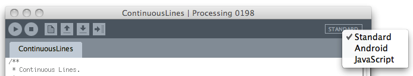
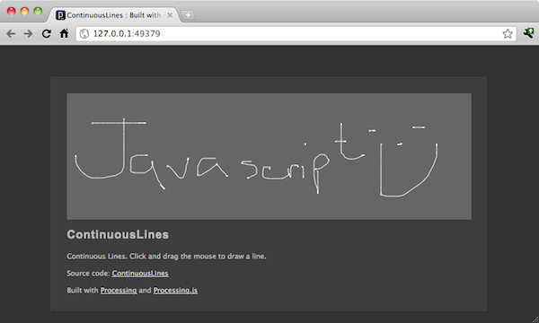
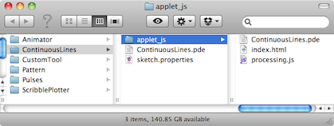

|
This tutorial is for Processing version 2.0+. If you see any errors or have comments, please let us know. This tutorial is adapted from Processing.js Quick Start - Processing Developer Edition by David Humphrey.
Why JavaScript Mode?Since 2001, when the Processing project first began, every single line of code anyone has ever written in Processing has been a line of Java code. When you deploy your Processing sketch as an application, it runs as a Java application. When you export your Processing sketch to applet form, it runs as a Java web applet. Even if you've used the recent Android mode to run a Processing sketch on an Android device (see Android tutorial), you're really just running a Java application. After all, just like Processing, Android is built on top of Java. If you are looking to build a desktop or mobile application with Processing, you are covered by Java (the default) and Android modes. But what if you are looking to deploy your Processing sketch to the web? Today, most web browsers still support Java Applets by means of a plugin. However, few web developers deploy Java-based web applications now, due to long load and startup times and difficulties relying on Java (or compatible Java versions) being installed. This trend is not isolated to Java, but is happening to all browser plugins (e.g., Flash), which are becoming less popular as issues of security, installation, deployment, etc. make them inconvenient or risky. In 2010, John Resig developed Processing.js which is currently being developed and maintained by [DAVID HUMPHRIES TO PROVIDE INFO]. For Processing 2.0, Processing.js has been integrated directly into the core and can be accessed via JavaScript mode (more about this in a moment) developed by Florian Jenett and Chris Lonnen. Processing.js is really two things: a Processing-to-JavaScript translator; and an implementation of the Processing API (e.g., functions like line(), stroke(), etc.) written in JavaScript instead of Java. It might seem odd at first to imagine your Processing sketches running in a browser without modification. But this is exactly what Processing.js enables. Processing.js automatically converts your Processing code to JavaScript. This means that you don't have to learn JavaScript in order to run your code in a browser. You can, quite literally, write your code using the Processing IDE like you always have, and using the new JavaScript mode (described in more detail below) get it running on the web. There's nothing new to learn, beyond getting a simple web page created. Under the hood, JavaScript mode uses the new HTML5 canvas element to create your sketch's graphics. The canvas element is a new feature of the web, and is either implemented or will be implemented by all major web browsers. All Processing drawing features have been reimplemented in Processing.js to use canvas, so any browser that supports canvas will also support Processing.js. It is important to note, however, that JavaScript mode does not currently support libraries. All Processing libraries are written with Java and would require a JavaScript translation for each and every library to work in JavaScript mode. Because JavaScript mode is brand new for Processing 2.0, no one has had the chance to implement their libraries in JavaScript. If you are a library creator and are interested in creating a JavaScript compatible library, stay tuned as we are developing standards and methods for doing so. Here's a sample of a Processing.js sketch ("Continuous Lines") running in the browser. Just click in the grey box and draw. If you can see it working, your browser supports everything you need already, and you can move on to instructions below. Draw with the mouse! Switching to JavaScript ModeA Processing sketch will open in "Standard" mode (otherwise known as "Java" mode) by default. If you want to run your sketch in JavaScript mode, simply click on the mode button on the top right of your Processing sketch window and you will see all the mode options. Select JavaScript.  Once the sketch is in JavaScript mode, you can work on your sketch just like you always do, writing code, making tabs, looking up functions in the reference. The only thing that changes is what happens when you press the "play" button. Instead of launching an application window like in standard mode, Processing will launch a web server in the background and run your sketch in a browser.  In addition to using the Processing IDE, you may also want to consider experimenting with web-based Processing.js code editors, such as: Creating a Processing.js Web PageOnce you have finished writing your sketch, you will likely want to publish it to the web. After all this is the primary reason for using JavaScript mode in the first place! JavaScript mode will automatically generate the HTML and javascript code required to publish your sketch for you. Just take a look in your sketch directory for a folder named "applet_js." This folder is generated each time you run your sketch (you can also force its generation by running FILE --> EXPORT which works similarly to Standard mode's "Export" that generates an HTML page and JAR file for an embedded Java applet.) Whenever you run or export, Processing will generate three files in a folder named "applet_js" (see below). 
Things to Know as a Processing Developer using Processing.jsWhile Processing.js is compatible with Processing, Java is not JavaScript, and canvas has some differences from Java's graphics classes. Here are some tricks and tips as you start working on more complex sketches in Processing.js. Processing.js has no data directoryProcessing uses the concept of a data directory, where images and other resources are located. When you run a sketch in JavaScript mode, the data directory is not used. Instead all data files live in the same folder as the above three files. Processing.js implements Processing, but not all of JavaProcessing.js is compatible with Processing, but is not, and will never be, fully compatible with Java. If your sketch uses functions or classes not defined as part of Processing, they are unlikely to work in JavaScript mode Similarly, libraries that are written for Processing, which are written in Java instead of Processing, will most likely not work, though hopefully this will change as more libraries are written for both modes. Division which is expected to produce an integer might need explicit castingThere are a class of bugs that arise when converting Processing code to Processing.js that involve integer vs. floating point division. What was straight-up integer division in Processing code, when converted to Processing.js, can sometimes become problematic, as numbers become doubles, and introduce a fractional part. The fix is to explicitly cast any division to an integer that exhibits this behaviour: int g = mouseX / i; // before int g = (int)(mouseX / i); // after See bug report Processing.js has to cheat to simulate Processing's synchronous I/OProcessing uses a synchronous I/O model, which means that functions like loadImage() take time to execute, and while they are running, nothing else happens: the program waits until loadImage() is done before moving on to the next statement. This means that you can count on the value returned by a function like loadImage() being usable in the next line of code. Web browsers don't work like this. The web uses an asynchronous I/O model, which means that functions which load external resources can't make the program wait until they finish. In order to replicate Processing's load* functions, you have to use a special Processing.js Directive. The Processing.js Directives are hints to the browser that are written in comments rather than in the Processing code itself. Here's a typical Processing sketch that loads an image synchronously and then draws it:
PImage img;
void setup() {
img = loadImage("picture.jpg");
image(img, 0, 0);
}
This code will not work in the browser with Processing.js, because the call to image() will happen before the file picture.jpg has been downloaded. The fix is to ask Processing.js to download the image before the sketch starts, and cache it--a technique known as preloading. Here is the modified code:
/* @pjs preload="picture.jpg"; */
PImage img;
void setup() {
img = loadImage("picture.jpg");
image(img, 0, 0);
}
Notice the extra comment line at the top of the code. The @pjs directive is for Processing.js, and not the developer. Think of it as an extra line of code that will be executed before the program begins. There is also a directives editor under the JavaScript menubar which makes it easier to add syntactically correct directives to a sketch/p> If you have multiple images to load, use a list like so: /* @pjs preload="picture.jpg,picture2.jpg,picture3.png"; */ Processing.js requires more care with variable naming than ProcessingOne of the powerful features of JavaScript is its dynamic, typeless nature. Where typed languages like Java, and therefore Processing, can reuse names without fear of ambiguity (e.g., method overloading), Processing.js cannot. Without getting into the inner-workings of JavaScript, the best advice for Processing developers is to not use function/class/etc. names from Processing as variable names. For example, a variable named line might seem reasonable, but it will cause issues with the similarly named line() function built-into Processing and Processing.js. Whatever you can do with the web, you can do with Processing.jsNow that your sketch is working, and you have a basic web page, you'll probably start getting ideas about how to make this look more beautiful, how to better integrate your sketch with the surrounding web page or site, and how to mix data from various web services and APIs. Is it possible to mix images on Flickr and a Processing.js sketch? Yes. Is it possible to link Twitter to Processing.js? Yes. Anything the web can do, your Processing.js sketch can do. This is an important idea, and is worth restating: Processing.js turned your once Java-based code into JavaScript, and your graphics into <canvas>. As a result, anything you read on the web about dynamic web programming, AJAX, other JavaScript libraries or APIs, all of it applies to your sketch now. You aren't running code in a box, cut-off from the rest of the web. Your code is a first-class member of the web, even though you didn't write it that way. If you're feeling adventurous and want to go learn more about how to do other thing with HTML, JavaScript, CSS, etc. visit http://processingjs.org/ for more.
This tutorial is for Processing version 2.0+. If you see any errors or have comments, please let us know. This tutorial is adapted from Processing.js Quick Start - Processing Developer Edition by David Humphrey. |